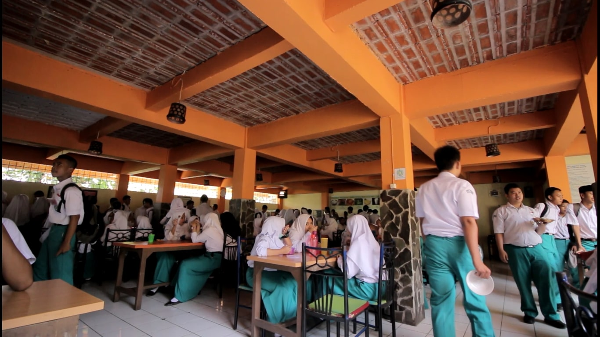

"KANTIN"
Home

Kantin WIKRAMA Merupakan Kantin Sehat Karna Makanan Yang Ada Di Sana Merupakan Makanan Tanpa Micin Makanannya Enak, Harganya Murah Dan Higienis. Di Kantinnya Ada Cemilan, Makanan Berat, Makanan Ringan, Dan Minuman. Lalu Tempatnya Juga Luas Dan Bersih.